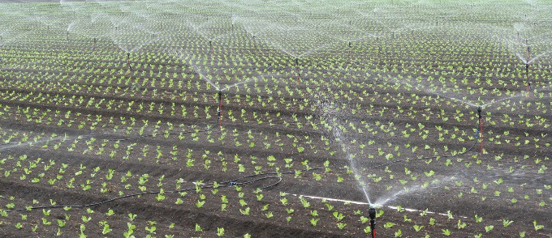
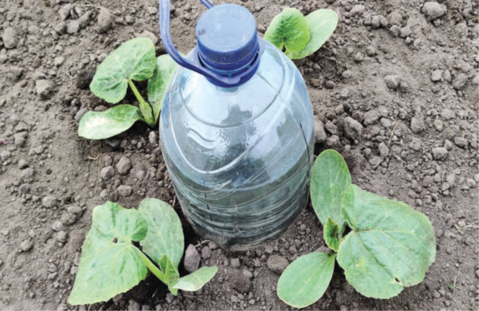
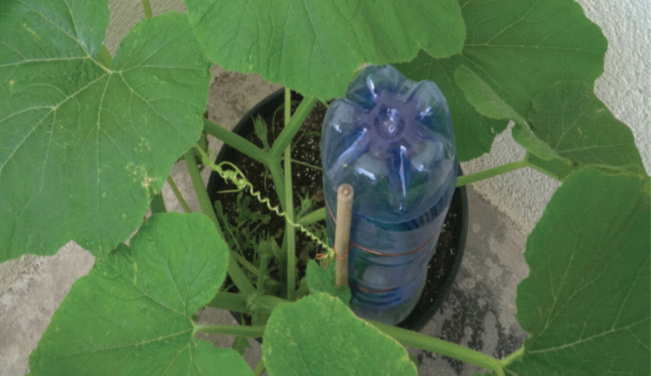
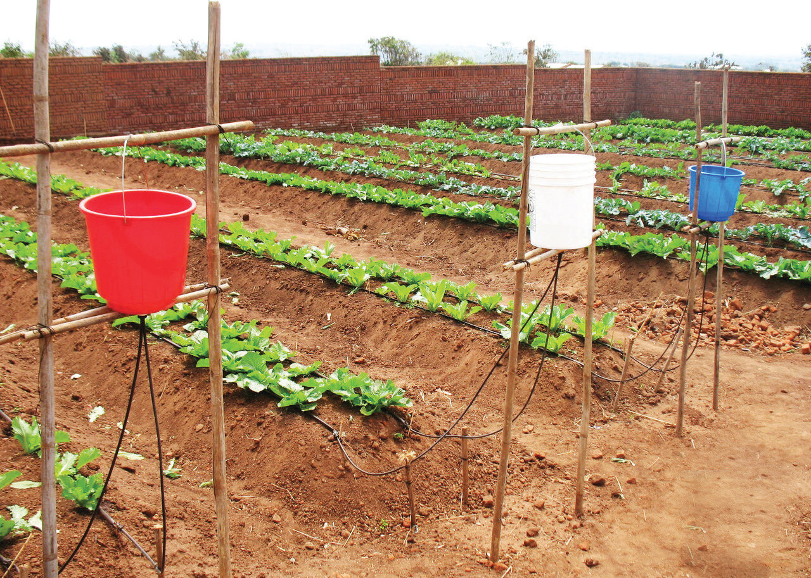

Figure 4.6 (e): Home-made drip irrigation system using buckets and plastic pipes
Source: https://cdn11.bigcommerce.com/s-st1uy1bvz1/images/stencil/1280x1280.jpg

AGRICULTURE FORM ONE.indd 639/17/25 12:09 PM